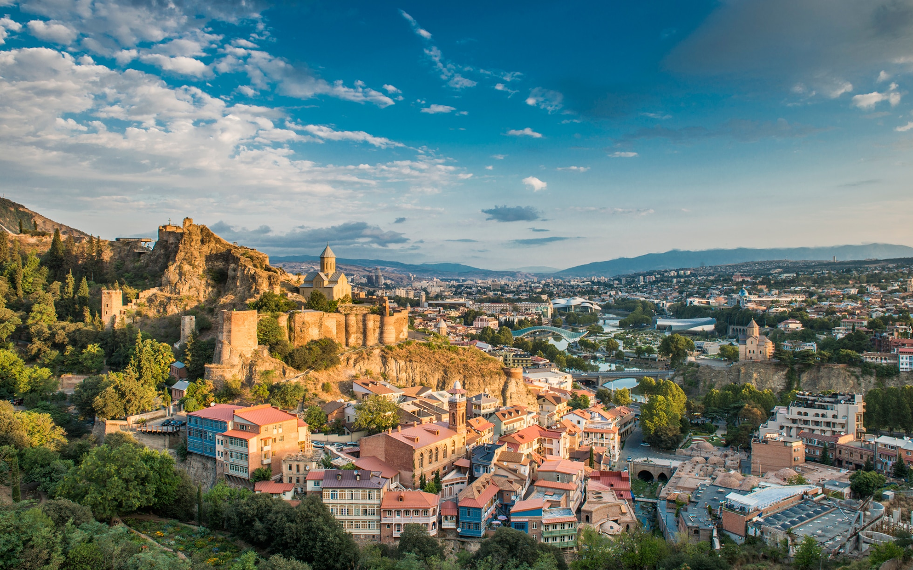
Tbilisi, national capital, Georgia
Information about Tbilisi:
- Tbilisi - is the capital of Georgia and one of the municipalities located in the Eastern part of Georgia, in Tbilisi basin.This city is distinguished by nature and important cultural artifacts and history. Here you can see waterfalls, lakes and enjoy beautiful views. Eclecticism is a characteristic niche for Tbilisi. There is a culture of many different eras or character which are interestingly mingle with each other. In addition to the capital, it is also worth noting the settlements in the municipality of Tbilisi, where we find pleasant conditions for rest, for relaxation and wandering around the city. Also, here we find temples of historical and cultural value and impressive fortresses.
- The territory of Tbilisi has been inhabited since the Early Bronze Age (IV millennium BC). In the sources it is first mentioned in the second half of the IV century. By the end of the IV century, Tbilisi had become the residence of the Persian servant - Pitiakhsh. By the middle of the V century it was again in the hands of the kings of Kartli. In the V century, the city was restored and rebuilt by Vakhtang Gorgasali, according to some scientists, this is why he was considered to be the founder of the city. The oldest population of Tbilisi appeared in the district of the sulfur springs. The second district of Tbilisi also emerged in the IV century and in a later period it gradually grew upstream of the Mtkvari. Due to its convenient geographical location, Tbilisi has become one of the important centers of the Middle East. There were significant trade routes to East Transcaucasia and pre-Asia. By the end of the VI century it had become the object of centuries-long struggle, dispersal, and conquest. David IV Aghmashenebeli (the Builder) liberated the city of Tbilisi from the domination of foreigners in 1122. At this period Tbilisi became the state capital. From the XIII century the period of struggle and rebellion for Tbilisi begins again. In 1490, after the disintegration of Georgia into separate kingdoms-principalities, Tbilisi became only the political and administrative center of the Kingdom of Kartli. Since 1633, when Rostom was appointed governor of Kartli, Tbilisi was revived again. In 1735, Tbilisi was conquered by Nader Shah and in 1748, Erekle II liberated it. After that, the city regained strength, founded a philosophy seminar, there were arsenal, mint, earthenware enterprises and dye-houses of textile. Nowadays, Tbilisi is the capital of Georgia and one of the municipalities.
- Tbilisi is located in Eastern Georgia, in the Tbilisi Basin, on both banks of the river Mtkvari. It borders to the north by the foothills of Saguramo Ridge, to the east by the northwestern part of the Iori Plateau, and to the west by the branches of Trialeti Ridge. Administratively Tbilisi is divided into Gldani, Didube, Vake, Isani, Krtsanisi, Mtatsminda, Nadzaladevi, Saburtalo, Samgori and Chugureti districts. The main artery of the city water is the river Mtkvari. In the past, the basin of Tbilisi was covered by oak and hornbeam forests, but in the vicinity of Tbilisi forests have long been cut down and now, as part of the settled city, and neighboring plains, hills and mountain slopes occupied by paliurus of wood, stepped verdure and artificially built plants. According to general signs, the climate of Tbilisi is subtropical and semidry. Here it is hot summer and cold winter. The average air temperature in July is + 24.4, and in January it is + 0.9 °C. Sulphuretted hydrogen thermal water flows into many places in the old districts of Tbilisi. It is an important mineral of the city.
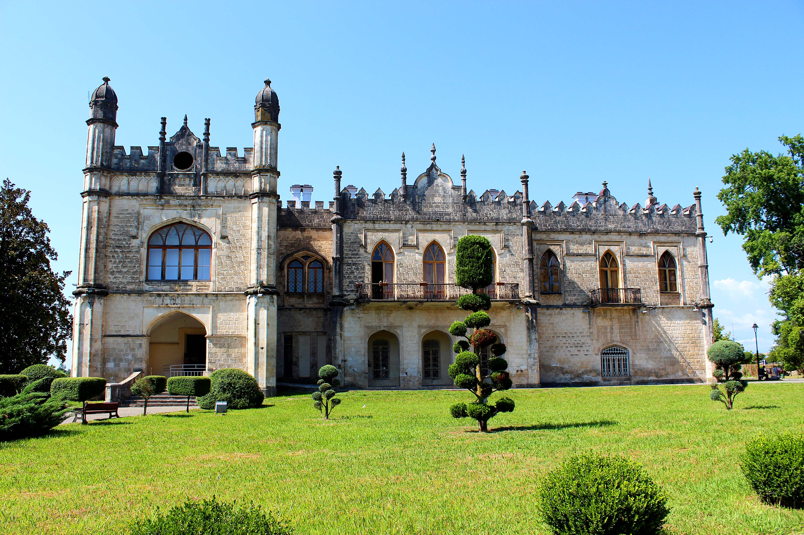
Samegrelo, Georgia
Information about Samegrelo:
- Samegrelo - is a historical - geographical side of western Georgia that covers the territories between the rivers Rioni, Tskhenistskali, Enguri and the Black Sea. Its central city is Zugdidi. The Samegrelo region had a great strategic importance throughout its history, because of this, it became the object of numerous invasions by armies of the Romans, Byzantines, Mongols, Turks, Persians, Russians and others. This region is rich in cultural monuments of different eras and impressive nature, blue lakes and very beautiful canyons.
- In ancient times, Samegrelo was a part of the Kingdom of Colchis. Colchis completely covered the territory of present-day western part of Georgia. Prior to the modern era, the region was also known as Lazika and Egrisi. Its political center was Archeopolis (or Nokalakevi). The myth of the Argonauts and the Golden Fleece is related to Nokalakevi. The Romans conquered this area in the first century BC and ruled it for almost 400 years. In the XI century, the western and eastern Georgia were united into one kingdom, which existed until the XI century. By the end of the XI century, Georgia was divided into three independent states: Kartli, Kakheti and Imereti. Several principalities were created, one of which was Odishi. It covered the whole territory of present-day Samegrelo. From the middle of the XII century through the XIX century, Odishi was ruled by the representatives of the Dadiani family. In 1803, Odishi became a protectorate of Russia. By this time the eastern Georgia was already under the Russian rule. In 1918, Georgia declared independence and Samegrelo became a part of the new democratic country. Today the territory of the principality of historic Samegrelo is part of Samegrelo-Zemo Svaneti administrative region.
- Samegrelo is a very interesting place with its historical past and customs. The interest in the mode of life of this region was great in the past. Greek writers considered Colchis the descendants of the biblical son of Noah - Yaphet and Herodotus regarded them as a people of Egyptian descent. Nicolaus of Damascus wrote that the Colchians did not bury the dead in the ground, but they wrapped them up in the leather and hung on the tree. According to Herodotus, the custom of the Colchians was circumcision. Neighboring cultures had a big influence on such customs. Along with religious cultures from outside, worship of trees and others were spread in Colchis, part of which is still preserved in Samegrelo, mostly in the high mountain villages. One of the traditions is the “share of the crow”, in which the eggshell is filled with Ghomi and cheese, then they throw it up on the roof with the words: “share of the crow”, after which the crow will not take away the chickens. In all parts of Georgia the ritual of weeping was very important. In this respect, the well-known tradition is the Megrelian “Zari”- a ritual song for the weeping of the dead. Samegrelo is also rich in Folklor. The most famous Megrelian folk song is “Megrelian Nana”- the lullaby, one of which tunes were used by the Russian composer Peter Tchaikovsky in his famous Christmas ballet - The Nutcracker.

Svaneti, Georgia
Information about Svaneti:
- Svaneti - is the highest mountainous, historical and geographical region in Georgia and is located in the Northern part of Western Georgia. Svaneti is distinguished by acute expression of individualism. The mountain picks, the cliffs, the fortress-towers, which have become symbols of freedom and a strong soul, have attracted the attention of travelers, tourists and fans of mountain sports. This ancient culture is very interesting with numerous cultural monuments, characteristic frescoes, traditions and impressive nature.
- The earliest mention about Svans occurs in Greek and Roman historians, Strabon (64/23 BC, 23/24)) and Plinius (23/24). According to Strabon, the Svans in the 1st century were stronger from the neighbouring tribes of the Dioscuri Highland.The Svans originally were settled in a more extensive area, and they held a significant part of Lechkhumi and Racha. Svans also lived in certain territories of present-day Samegrelo. In the early centuries Svaneti was part of Colchis and then Egrisi Kingdoms. In the first half of the III century BC, during the reign of King Parnavaz, Svaneti was the Saeristavo of the Kingdom of Kartli. In the IV century it became an ally of the Kingdom of Lazeti and often participated in the battles to protect the borders of the kingdom. Svaneti was always independent until 1833, when it was subordinated to Russia. In 1875-76 there was an uprising against the policy of tsarism (when the government of the king was going to increase taxes in the region) which ended with the destruction of the village of Khalde and capture of the rebels.The famous Svan song "Gaulgavkhe" was dedicated to the uprising in Svaneti. Nowadays, Svaneti is part of the administrative Regions of Samegrelo-Zemo Svaneti and Racha-Lechkhumi-Kvemo Svaneti.
- Svaneti is a region with an ancient and interesting culture. Here, as in the whole mountainous regions of Georgia, pagan and Christian rituals, customs and traditions merge into each other and get a new, unique look. In Svaneti, there are still preserved centuries-old public holidays. One of the most beautiful holidays is “Lamproba”, which is still preserved only in Svaneti. This festival is held in the pre-spring period, for good weather and harvest. The main attribute of this holiday are lamps made of wood. After the rituals, accompanied by lamps, people gather around the fire and singing, dancing around, wrestling, etc. In Svaneti people are celebrating Uplish (Kviratskhovloba) with a great triumph, also the great holiday is Kvirikoba, which is celebrated in the Church of St. Kvirike and Ivlita in Kalas (the same as Lagurka). The celebration of the souls of the dead, Lipanali, is also well-known, etc. It is worth noting Svan folklore with dances, highly artistic poetry and singing. The Svan Lile is well-known, which is dedicated to the god of the sun. In Svaneti there are a lot of myths about goddesses, demons, magical creatures, also you will hear unbelievable hunting stories. An indivisible accessory of Svan clothing is the Svan hat made of felt. The twisted thread stretched over it creates a cross on the top. Svan cuisine is special and delicious. In ancient times, the Svan Supra (feast) was considered a symbol of getting closer and respect. The reconciliation of deadly enemy were held at Supra, also agricultural and secular affairs were resolved there. Special dishes are Kubdari and Chvishtari. Because Svaneti is particularly developed in livestock, the cuisine is distinguished by the diversity of meat dishes and dairy products. Svans drinks vodka- Rakhi. From spices Svan Salt is well-known. Since ancient times, gold has been mined in Svaneti. In Legends, gold-horned bulls and a Golden-haired goddess are often found.
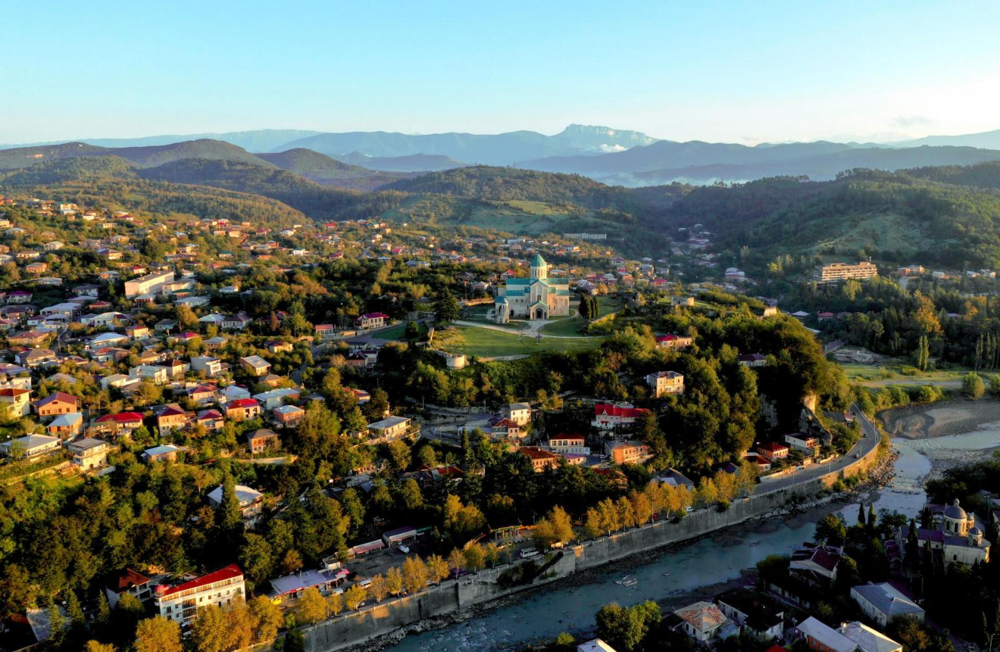
Imereti, Georgia
Information about Imereti:
- Imereti - region is located in western Georgia and includes the territory of Imereti, a historical-geographical province. Imereti is a region with an ancient culture. It is also stunning and diverse in nature. Remains of the glory of ancient Colchis, temples, waterfalls, mystical Khvamli mountain, or numerous caves will take you on a journey into the magical world.
- Traces of human life in the territory of Imereti are yet confirmed from the Lower Paleolithic period (Paleolithic - from ancient times to 12000 BC). In the XIII century B.C. there was a large union of Colchian tribes here. Later, the former class Georgian state, Kolkata, was created. After the fall of Colchis, the kingdom of Colchis emerged in western Georgia, the capital of which, according to ancient authors, is considered to be Kutaisi. The territory of present-day Imereti was an integral part of the Kingdom of Colchis. In the 1st century, a new Georgian state unit, the Kingdom of Egrisi (Lazika), emerged on the site of the Kingdom of Colchis, which soon came under the influence of the Roman Empire. The kingdom of Egrisi was also the object of confrontation between the Greeks and the Persians. At the beginning of the 13th century, an Arab commander, Marwan ibn Muhammad (Marwan's cruelty and ruthlessness were epitomized by the Georgians by naming him Murvan Qru ("Marwan the Deaf")) invaded and dispersed in Egri. In the following period, Imereti became the center of Georgian life and Kutaisi became the capital of western Georgia first and then of Georgia. X-XII centuries are considered to be the golden age of Imereti. Important notes of Georgian culture were built during this period. In the XV century, after the collapse of the Georgian feudal monarchy, Imereti was established as a separate feudal state. Initially, the Kingdom of Imereti covered the entire territory of western Georgia, but in time it was separated from the principalities of Odisha, Guria, Abkhazia, and Svaneti. The capital of the Kingdom of Imereti was Kutaisi. Kutaisi has experienced many ups and downs, although it has often been raided due to its wealth and strategic location. Kutaisi has been a cultural and educational center for centuries. During the Soviet period, it was one of the largest industrial centers. Based on the current regional division, historical Imereti has the status of a territorial-administrative part.
- The culture of Imereti, like other parts of Georgia, is different and diverse. Imereti celebrates various public holidays, such as Zekaroba, Ortsipoba (same as Motsametoba), Bosloba, Sachkherloba, Chiaturoba, etc. Bosloba is held in honor of the deity Boseli. On this holiday, the men going to Boseli (cowhouse) had children hanging on their backs, putting a piece of fat on the cattle - so to fatten. On Zekaroba people visit Kvasakdara hill, it is possible to taste traditional dishes, observe horse racing, and attend other events. The festival with this name has been held for several years and it is a new continuation of "Shepherd's Day". Singing is an integral part of Imereti. The folklore and folk songs of this region are well known. Imereti people are distinguished by their aesthetics and sobriety, which can be seen by their homestead and traditional clothing. You can also find samples of traditional beautiful clothes of Imereti in the Georgian National Museum. In ancient times, short chokha (Georgian national suit) was typical for Imereti. Raphael Eristavi (Georgian poet and playwright) described the Imereti man's attire as follows: "The Imereti people wore short chokha above Akhalukh, woolen shawls around their legs, which were tied with a special belt and a hat called Papanaki on their heads." Later, the Circassian long-style Chokha spread. This region is also distinguished by its construction skills. Here the tradition of homestead planning was passed down from generation to generation. The house stands in the center of the yard. It is tiled and decorated with carved balconies facing the sun. One of the oldest centers of pottery in Georgia is in Shrosha. The tradition and secret of the craft-making are preserved in every family here and is passed down from father to son. There is a big pottery market in the village of Shrosha. Imereti people are amazingly hospitable and Imereti cuisine is also incredibly delicious. Walnut dishes are common here, and herbs are also abundantly used. Imereti khachapuri is known and popular all over Georgia. Also one of the outstanding dishes is the fried chicken dipped in blackberry and unripe grape juice, so-called Isrimakvali. Imereti should also be mentioned in terms of winemaking. Imereti is one of the most diverse parts of Georgian wine, which is due to the diversity of climatic conditions and soil composition of mountainous Imereti. Imereti vine varieties are Tsolikauri, Tsitska, Krakhuna, Otskhanuri Sapere, Adanasuri, and others.
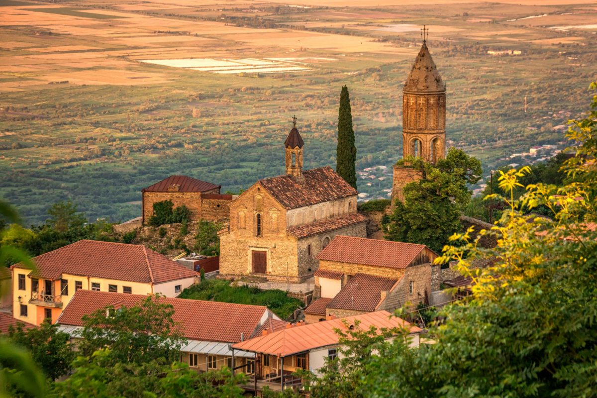
Kakheti, Georgia
Information about Kakheti:
- Kakheti - is a region located in eastern Georgia, which includes the territories of the historical-geographical provinces of Kakheti, Hereti (partly), and Tusheti. This region is rich in monuments of different periods and diverse nature. Here you will find ancient settlements, distinctive temples, castle towers, beautiful forests, waterfalls, alpine lakes, vast plains, and even a radiant desert. Ancient history, interesting culture, impressive nature, and resorts make Kakheti very attractive for those who want a pleasant vacation and for travel lovers.
- Traces of human life in Kakheti date back to the Stone Age. According to the discovered material, people lived permanently in the Stone Age on the territory of Kakheti. Traces of human life here must be defined between 2 million 300 thousand years and 10,000 years BC. In the II and III millennia of the IV millennium BC (Early Bronze Age) the Mtkvari-Araksi culture was widespread on the territory of Kakheti, as well as in the whole central part of the South Caucasus. Kakheti was one of the main places for the spread of Trialeti culture in the Middle Bronze Age. The establishment of Kakheti as a separate territorial unit is attributed to Kakhos, one of the sons of the Georgian ethnarch, Kartlos. In ancient times, Kakheti covered a much smaller area, namely Ertso-Tianeti and Pkhovi, the center of which was Cheleti (Zhaleti). After Kartlos's wife redistributed the territory of Kartli to her sons, Kakho received the above-mentioned borders. But during the same Kakhos period, he ceded to his brother Kukhos the left bank of the Iori River from Lapiankhevi to Bochorma Fortress. From the 4th century, the center of Kakheti was Ujarma, built by King Asfarug. The borders of Kakheti were expanded in the east. By the VIII century, it covered an important part of Kukheti and Hereti. In the 11th century, the city of Telavi became the center of the region. In the XV century, after the disintegration of Georgia, the Kingdom of Kakheti was formed. From that time, the center of Kakheti became Gremi. In the XVI-XVII centuries, Kakheti was separated from the north-eastern part, which today bears the name of Saingilo and is administratively included in Azerbaijan. In the second half of the 17th century, the center of Kakheti moved to Telavi again. The Kingdom of Kakheti existed until the XIX century. Based on the current regional division, historical Kakheti has the status of a territorial-administrative side.
- Kakheti is an interesting place in terms of its culture and customs. Kakhetian folklore is noteworthy. Khakhetian folk songs Mravalzhamieri, Tsintskaro, Urmuli, Makruli, and others and well-known. "Chakrulo" was introduced to the world. As it is well known this important sample of Georgian folklore was sent into space. Tush folklore is also a part of the diversity of Kakheti region. Many public or religious holidays are celebrated in Kakheti, such as Alaverdoba, Iliaoba, Gremkalakoba, Erekleoba, Pirosmanoba, and others. Alaverdoba is an ancient holiday. It consisted of separate remarkable holidays, starting from the day after the Feast of the Cross ( Jvartamagleba ) and lasting three weeks. This holiday is also associated with some pre-Christian beliefs. During the holiday a market and several events were held in Alaverdi, people from different angles and faiths visited the Alaverdi temple. The celebration had its specific ritual ending. 200-300 horsemen used to gather in the Alaverdi yard and surround the Alaverdi temple while singing "Dalai" (Georgian folk funeral poem-song) for the souls of those killed in the war. Tush holidays should also be noted, during which you will be able to taste the delicious traditional cuisine and get acquainted with interesting traditions. As for the clothing, the Kakhetian Chokha is long, with the knees bent, with a wedge-shaped opening around the chest to make the Akhalukh appear. It was worn largely unbuttoned, the sleeves extended to the wrist, and often worn rolled up. Georgian, Dagestani, and Ossetian shawls were used to sew Chokhi, mainly black, chestnut-colored, and blue. Tush embroidered clothes with colorful ornaments are undoubtedly uniquely beautiful. Kakheti is also known for its exceptional cuisine. Meat dishes are especially popular here. Traditional dishes are Mtsvadi (barbecue) fried on tsalami, khashlama, chakafuli, chikhirtma, and others. In Tusheti, dairy products and related dishes are common with meat. Tush cuisine is famous for Khinkali, Mtsvadi, Choban (Shepherd Kaurma), Khmiadi (ritual triangular bread), Gordila, Kumeli, Kotori, Khavitsi, Mosmula, and others. Tushuri Gudi cheese is well known, the cheese is made in a sheepskin bag. Different types of tea are also common here. It is impossible to talk about Kakhetian cuisine and not be reminded of Kakhetian wine. Kakheti is a wine country, it occupies a special place in the production of Georgian wine. About 200 wine varieties are described in this region. Especially popular varieties are Rkatsiteli, Kakhetian Mtsvane, Khikhvi, Kisi, and Saperavi.

Adjara, Georgia
Information about Adjara:
- Adjara - is historical-geographical site of Georgia, which is located in the gorge of Adjaratskali. The territory of the Adjara region has great history. It was populated from ancient time. Except cultural monuments from different period, there is a wonderful nature in here, like sunny beaches, greenery and very impressive mountainous Adjara. You can meet the local lifestyle and culture in the mountainous villages, which are far from the bustle of modern civilization. Adjara is an amazing site for noisy entertainment and chocolate sunburn lovers as well as for the adventurers of harmony in a peaceful nature.
- Adjara is one of the oldest region of Georgia, it was part of upper Kartli, Meskheti. It was mentioned in Georgian written series firstly in XI century, in the narration of Leonti Mroveli, particularly in the notion of the division of Iberia into Saeristavo by King Pharnavaz( BC IV-III). But according to the scientists, the site was populated even in IV-III century BC, by the period of Stone Age. Bronze and Iron Age cultural layers have been found in the territory of Adjara. The story of Christianity is also connected with this region, Andrea the First preached Christianity in Adjara for the first time. Adjara was under the control of Gurieli in XV-XVI century, in XVII century Ottomans conquered it. In 1609 it was released and joined to the Principality of Guria, but soon in 1614 the region fell under the Ottomans, which lasted for two centuries. The population of Adjara was converted to Islam during the period of Ottoman domination, but people maintained Georgian nationality, the Georgian language, Georgian surnames and the most important, Georgian identity. After the Russian-Ottoman war, on the basis of a cease-fire agreement, Adjara became a part of the Russian Empire in 1878. After joining the Soviet Union, Adjara was declared an autonomous Soviet Socialist Republic in 1921 and after the restoration of Georgia's independence, it maintained the political status of the Autonomous Republic of Adjara.
- Having an interesting culture and traditions in Adjara, one can meet sharply different outfit, cuisine and folklore here. This region is characterized by diversity. The clothes of Adjarian man were short and close-fitting. Chokha is slightly below of the waist and was embedded in a woolly Dzigva (Trousers). Inside of Chokha Georgian man wore Zubun (long sleeve waistcoat). Adjarian man was wearing Kalamani( shoes) outside the local knitwear and velvety socks. They were having Kabbalah( hat) on the head. Some of them were wearing Chokha and black satin Zubuns. The main attribute of Adjarian outfit was the weapons - a rifle, a waistband around the waist, a silversmith, a dagger and Matara (flask). The women wore a kind of coat with a cotton or without it, according to the season. Below the waist, they wore a dress, under the dress - a shirt and trousers made of scarlet. On top of them was headwear, a Lechak from above, one of the button was down to the waist, with a thin veil on her face. Above all, they had a white veil. Adjara has a very diverse folklore. Cheerful poetry, martial dance “Khorumi” and energetic, lovely dance “Gandagana” that expresses the identity and character of this region in the best way. There are many public celebrations in Adjara like: Shuamtoba, Maretoba, Machakhloba, Selimoba, Tbeloba etc. The festivals include hunting, games, dancing, singing, sports competitions, and sometimes showing off the local handmade things. One can also have the opportunity to taste traditional Adjarian dishes on the festivals. Adjarian cuisine is rich and tasteful. Usually they use milk products like butter, cottage cheese, cheese etc. A hardworking and tireless peasant needs nutritious food. The best local dishes are: Adjarian Khachapuri, Borano, IaKhni, Fkhallobio, Achma Sinori da Kuruti. Adjarian Baqlava is especially delicious among sweets. Viticulture is the oldest tradition in Adjara. The amount of local vine varieties was 80. The most widespread types of grapes are Tsolikauri and Chkhaveri. Today the most popular is Satsuri. Tobacco and beekeeping are also widespread in the region.
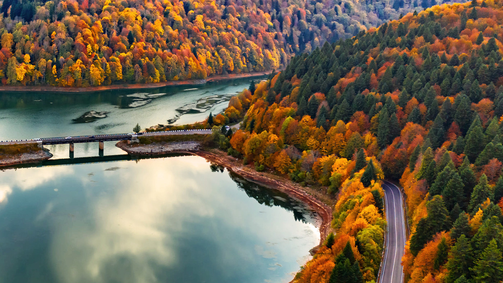
Racha, Georgia
Information about Racha:
- Racha - is the historical-geographic site of Georgia that is situated in the north-east side of west Georgia. It is quite rich with cultural monuments and diverse nature. Racha is well-known with the masterpiece of Georgian architecture, Nikortsminda that is characterized with rich and sophisticated ornaments. In addition to the interesting cultural sites, you can enjoy chilly forests, alpine lakes, beautiful waterfalls and stunning views in Racha.
- Racha is a region with a great history. The traces of human life was evidenced here in the Bronze Age. In the early period, Racha and Lechkhumi together created a Takveri( historical site). Takveri is mentioned in the 7th-century sources. Takveri was separated from Racha and Lechkhumi maintained the name. At the end of the 10th century, Racha Saeristavo ( territorial unit of medieval Georgia, Duchy) was set up, the first Eristavi( duke) of it was Rati Bakhvashi. In XII century David Narin abolished the Saeristavo, declared the area as a royal land. The Kakhaberidze ancestry has disappeared. In the XIV century, after the restoration of Sariavisto, Charelidze family had the title of Eristavi and later, in 1488, the family of Chkhetidze. In the second half of the 15th century, after the collapse of Georgia as a kingdom, Racha became the part of Samegrelo. In the XV century, the King of Imereti Bagrat III handed over Minda fortress to the dukes of Racha.In the XV-XVII centuries, the kings of Imereti owned slave land in Racha Saeristo. In 1789, Solomon II reigned in Imereti, who finally abolished the Racha Saeristavo. When the Imereti Kingdom became the part of the Russian Empire, the territory of Racha formed firstly Okrug( the unit of administrative autonomy of soviet union), then Mazra( administrative-territorial unit). Racha was ruled by several aristocrat families during different periods: Tsulukidze, Iashvili, Japaridze, Inasaridze, Lashkhishvili. Nowadays Racha is part of Racha-Lechkhumi and Kvemo Svaneti region.
- Culture is diverse and interesting in Racha, with its folklore, cuisine and traditions. There are old public holidays such as Atagenoba, Bosloba etc. Racha folklore is distinguished and many explorers mentioned it. Famous Rachuli songs are "Kvedvrula", "Rashovda", "High in the mountains" and so on. The folk poetry of Racha is also preserved. There are a lot of legends about the establishment of villages and the etymology of their names. Racha is famous for carpentry. In many parts of Georgia, you can find ode houses built by Rachvelebi (the people of Racha). These houses are characterized with beautiful decorations and ornaments. Rachuli cuisine is delicious and it attracts gourmets with its pot beans, Rachuli ham and Lobiani ( a bread with beans, Georgian traditional dish). The winemaking tradition is developed in the region, high-quality red wine, naturally semi-sweet Khvanchkara.
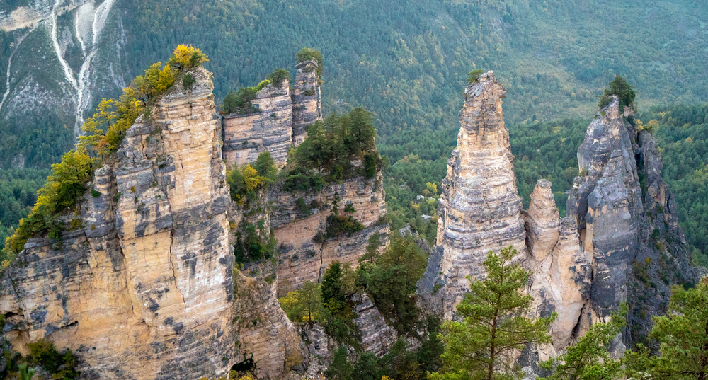
Lechkhumi, Georgia
Information about Lechkhumi:
- Lechkhumi - is located in the northern part of western Georgia, present-day Tsageri municipality. It is distinguished by its ancient culture and beautiful nature. Lechkhumi is a very interesting and attractive place for travelers with forests, waterfalls, canyons, mineral waters, alpine meadows, lakes and a mystical mountain of Khvamli with a great history. Khvamli Mountain is an important place for the whole history of Georgia, which is visited by many people on the holiday of Khvamloba.
- The traces of human life in Lechkhumi date back to the Paleolithic-Neolithic age. The territory is considered as one of the most powerful metallurgical sites of the Late Bronze and Early Iron Age. From ancient times the international caravan route has been passing through the middle of Lechkhumi, connecting Fazisi with the peoples of the North Caucasus. After the creation of a united feudal state, the Kingdom of Georgia, the Takveri Saeristavo was created, which included present-day Racha - Lechkhumi and the part of Kvemo Svaneti. Its center was Tsageri. After the period of David the Builder, until the collapse of the united Georgian kingdom, Takveri was sometimes an independent Saeristavo and sometimes it was subordinate to Svaneti. Although, Lechkhumi was the smallest political entity in western Georgia, there were plenty of fortresses and it was a great shelter during the war. According to historical sources, the treasure storage of Georgian kings were on the Khvamli Mountain. Since the second half of the XVII century Lechkhumi was seeking for independence and a position appeared- the title of head of Lechkhumi. In the XII-XIV century Takveri was replaced by Lechkhumi. The word Lechkhumi is first mentioned at the end of the XV century. Its trade and economic center was in Lailashi. After the creation of the Kingdom of Imereti (XV century), Lechkhumi entered in the kingdom as a Royal Domain. From the second half of the XVII century, the Lechkhumian nobles tried to create separate Satavados. In 1714, after the Lechkhumi's dirigeant Bejan I Dadiani became the Mtavari of Samegrelo, Lechkhumi became one of the parts of the Samegrelo Principality, and was ruled by Dadiani's selected commander. Lechkhumi played a major role in the economy and military affairs of Odishi. Nowadays, historical Lechkhumi, present-day Tsageri Municipality, is the part of the Racha - Lechkhumi - Kvemo Svaneti region.
- Lechkhumi is located in the northern part of western Georgia, in the sheltered zone of the Lechkhumi, Egrisi and Racha ridges to south of the Western Caucasus ridge. Today it is a municipality of Tsageri and is part of Racha - Lechkhumi - Kvemo Svaneti region. Its administrative center is Tsageri. Lechkhumi is bordered by Lentekhi on the north, Ambrolauri on the east, Tskaltubo on the southeast and south, Khoni and Martvili on the southwest and west. The Askhi massif separates it from Samegrelo, and from Svaneti and Racha - Lechkhumi Ridge. Tsageri municipality is mainly an area of medium and low altitude ridges, caverns and deeply cut narrow valleys. Chestnut-hornbeam and rhododendron luteum underbrush are common here, at 800-1000 meters and above there are Chestnut, Oak, Hornbeam, Maple and Tilia. More above there are mainly beech forest, rhododendron ponticum underbrush and dark pinophyta Fir and Spruce. Above 1800 meters are subalpine and alpine meadows. The territory of the municipality belongs to the low and middle mountain forest landscapes zone of Kolkheti. The location of Khvamli and Askhi Mountains to the south and west provides a different, more comfortable microclimate than the rest of western Georgia. In the low zone, at an altitude of 800 meters above sea level, the average annual air temperature is + 11.4 ° C, the average January temperature is -0 ° C, and in July - + 22 ° C.
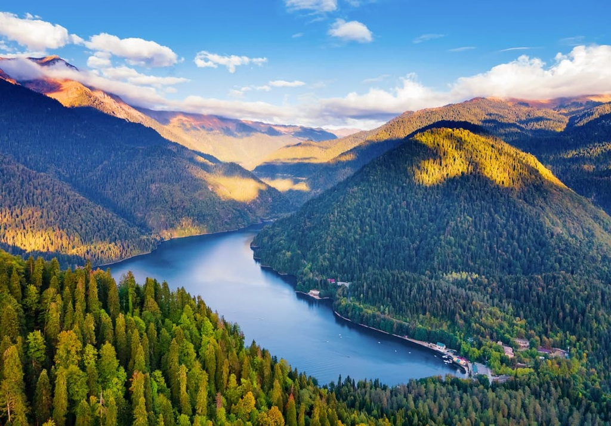
Abkhazia, Georgia
Information about Abkhazia:
- Abkhazia - Abkhazia is the extreme southwestern historical province of Georgia. At present, its northern part borders the main watershed gorge of the Great Caucasus, southwards and southwestwards it touches the Black Sea; its northeast border runs on the river Psou and the east border - the Svaneti - Abkhasian Gorge and the river Inguri. The area of the Autonomous Republic of Abkhazia covers 8.7 thousand square kilometres that are 12.5 % of the territory of Georgia.
- The region fought and won a war of secession with Georgia in 1992-93, and formally declared independence in 1999. After the Georgian-Russian war in 2008, Moscow recognized the region as an independent state. Georgia responded by declaring Abkhazia "occupied" by Russia. In recent years, Abkhazia has drifted closer and closer to Russia. In 2009 Moscow signed a five-year agreement with Abkhazia to take formal control of its frontiers with Georgia proper. In 2014, Russia and the breakaway region signed a "strategic partnership" agreement, angering Georgia, which accused Moscow of seeking to annex Abkhazia.
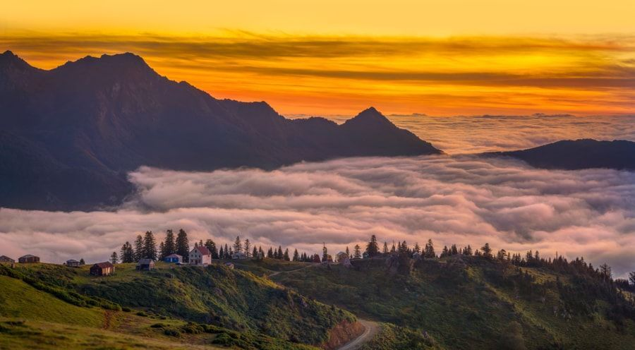
Guria, Georgia
Information about Guria:
- Guria - region is situated in western Georgia and it includes historical-geographic province, the area of Guria. It has an ancient history and a beautiful, hidden nature in green. Guria is impressive and interesting with its cool forests, mineral waters, alpine meadows, cultural sites and sandy beaches for the people having different tastes and interests. You can go above the clouds, in the frosty mountains from the sunny seaside.
- The traces of human life in Guria are evidenced from the Lower Paleolithic period. The process of consistent development of cultures continues throughout the Bronze Age and after that too. The material discoveries in Ureki-Tsvermaghala show the strengthening of the kingdom of Colkha and iron production in western Georgia (half of II millennium BC - I half of I millennium BC). In the VI century, the successor of Kolkha kingdom, Egrisi was developed in western Georgia. Guria was included in this territory too. After the collapse of Lazika, the territory between Rioni and Chorokhi was given to Guria. This site was less populated, but Guria progressed with the feudalization of the country. Guria mainly became strong in the VII-VIII centuries. The period is also relates to the strengthening of church and monastery life here. Firstly, Guria was mentioned with this name in the VIII century. In the feudal period, this region was established as one of the Saeristavo of Georgia( A territorial unit of Georgia, usually mentioned as a Duchy in English). Eristavi (Georgian equivalent of a duke or feudal lord) were Gurians, who came from the Vardanidze family. One of the first Eristavi of Guria must be Simon I Gureili. In the second half of the 15th century, after the collapse of united Georgia, Guria Samtavro (principality) emerged and was ruled by the Gurian people. The Guria principality was fighting constantly with the Kingdom of Imereti and the Ottoman Empire. Its principal ally was the Odishi principality. The independence of Guria's principality dates back to the time of Kakhaber II Gureli, when he opposed George VIII, the last king of united Georgia. From the second half of the XVII century, the Ottoman sultan asserted Gurieli on the throne. In the 1670s, Guria must give the tribute to Ottomans with 56 girls and boys aged 10-20. In the middle of the XVIII century, Guria principality was consolidated under Mamia IV Gureli's government. He tried to expel the Ottomans with the help of Erekle II. Guria's principality existed until the middle of the 19th century. In 1877-1878 Russian-Ottoman war front went on in Guria, which really damaged the region. On the basis of today's regional divisions, historical Guria has the status of a territorial-administrative region.
- Guria is a very interesting region with its culture, customs and traditions. There are many public and religious holidays in Guria: Alegroba, Kalanda, Feritsvaleba( transfiguration of nature) etc. Especially, the last one is celebrated here. Corn, grapes, pumpkin and other harvest are put on the table during this day. Generally, this day marks the turning point of nature. However, the main event of the celebration is horse racing, which takes place in Bakhmaro. People from over Georgia come in Bakhmaro on this day. Gurian people were known as one of the best horsemen in the world. They traveled in America and Europe many times. There is a tradition of playing Lelo in Lanchkhuti during the Easter holiday. The opposite sides think about a dead or honored person by themselves. They are taking the ball to the graves of these people by playing it. The representatives of the winning team go to the tomb with the losing team and they drink wine together, saying toasts on the graves.Gurian folklore is very special. Gurian “Krimanchuli” is the highest level of Georgian polyphony. Anzor Erkomaishvili compared it to the fly of swallow. “Kanuri” or “Naduri” is also quite popular. The oldest Gurian falk dances are: “Farcakuku”, “Kalmakhoba” “Dance with leaves” etc. “Farcakuku” is the dance of victorious warriors and it should be danced with women. Guria is a very hospitable region like other sites in Georgia. Gurian cuisine is quite tasteful, which is rich in a variety of vegetarian dishes. There are many kinds of pecans and nuts are popular too. Poultry dishes are also popular here: roasted chicken with watermelon, roast chicken with walnuts etc. Gurian beans with corn baked bread in the oven and Gurian Adesa wine are the best thing in Gurian cuisine. However, Guruli pie is the most famous Christmas pie from Gurian kitchen. It is very popular all over Georgia now, but before it was baked only during the period of Christmas.
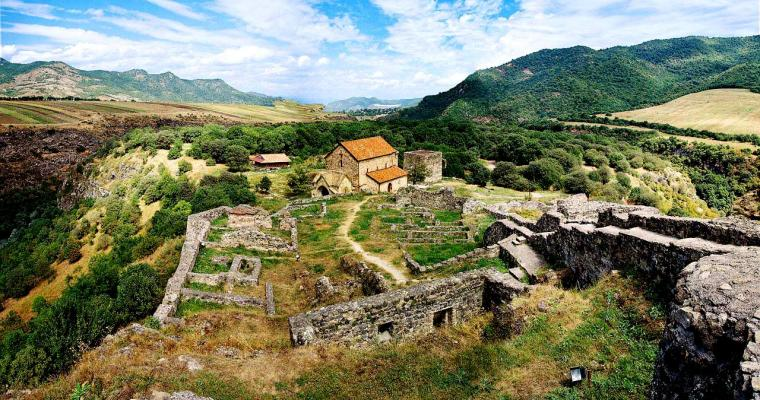
Kvemo Kartli, Georgia
Information about Kvemo Kartli:
- Kvemo Kartli - is located in eastern Georgia, which covers the territories of Kvemo Kartli and Trialeti. This area has a long history starting from prehistoric times to nowadays. The first Europeans of 1,800,000 years were discovered in Kvemo Kartli, named Zezva and Mzia. The Golden Mill of Sakdrisi from the IV Millennium is also here. Kvemo Kartli is rich with many interesting cultural monuments, beautiful and diverse nature, forests, lakes, mineral and thermal waters and resorts.
- Kvemo Kartli is a region with ancient history. The region has kept the traces of each stage of human life. People lived here, even 1 800,000 years ago. The first Europeans were discovered in Dmanisi, whose names were Zezva and Mzia. The world knows them as the species, Georgian people (Homo Georgicus). The territory of Kvemo Kartli has been settled by Kartvelian tribes since ancient times. Georgian people were originated as a result of their long interaction and interconnections. The most known Kartvelian tribe from those times is Gougars or Gogars. The various state units were set up at different stages with the development of the region. In the VII-XI centuries, the Emirate of Tbilisi, Kldekari Saeristavo and Tarish-Dzorageti kingdom were established on the area of Kvemo Kartli. There were border Saeristaos( a territorial unit of Georgia, usually called a Duchy) of Gaga and Lori in the XII-XIII centuries. After the Mongol invasion, Georgia lost its Khunan Saeristao and the state border was moved to the Ksia-Mtkvari border. The settlement of nomadic Turkmen tribes began in the 15th century. During the same period, the nobles were created in Kvemo Kartli: Sabaratiano, Saorbeliano etc. In the 17th century, Shah Abbas settled a nomadic tribe of Borchalo in the Debed Valley and he set up the Lori Khanate. In the XVIII century, due to the invasion of the Leki feudal lords, Kvemo Kartli got gradually empty from the indigenous population, most of them were sacrificed to the enemy, and part of it escaped to other parts of Georgia. Their place was occupied by different tribes. This is the reason why the ethnicity of this region is diverse. Kvemo Kartli was one of the hearth of spreading Christianity in Georgia. This explains plenty of churches and monasteries in this area. Summer residences of Georgian kings were also located here.
- Kvemo Kartli is located in eastern Georgia and it is bordered by the ridges of Trialeti, Javakheti and Bambak-Yerevan. It is bordered by Kakheti on the east, Shida Kartli and Mtskheta-Mtianeti on the north, Samtskhe-Javakheti on the west, Armenia and Azerbaijan on the south. Rustavi is an administrative center of Kvemo Kartli. It also includes six administrative units: Bolnisi, Gardabani, Dmanisi, Tetritskaro, Marneuli and Tsalka. Kvemo Kartli is located in the semi-desert, arid subtropical and mountainous alpine zone. Its landscape consists of fields and forests. The largest rivers of Kvemo Kartli are Mtkvari, Khrami and Algeti. There are many lakes and water reservoirs in the region. There is a humid subtropical and subtropical-continental climate in the plain of Kvemo Kartli. The temperate in Javakheti ridge is moderately humid, while in Tsalka region it is moderately humid to dry subtropical. The average annual temperature in the region is 15.3. The average temperature in January is 4 ℃ and in July it is 25.2 ℃.
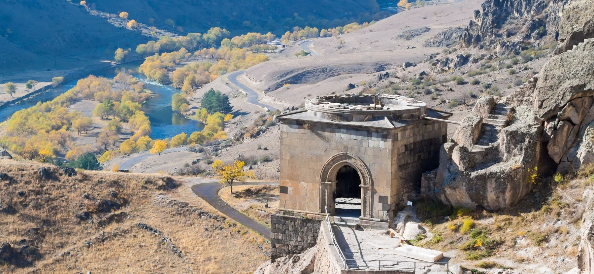
Samtskhe - Javakheti, Georgia
Information about Samtskhe - Javakheti:
- Samtskhe - Javakheti - is a region in southern Georgia and covers the territories of Samtskhe-Javakheti and Tori historical-geographical provinces. Akhaltsikhe is the administrative center. The region has a distinctive geographical location which contributes its economic and cultural relations with neighboring states for centuries. Samtskhe-Javakheti is a region of great historical-cultural significance and has kept many Christian or pre-Christian monuments. It is also rich in diverse natural monuments, fossils and resorts.
- Samtskhe-Javakheti is part of historic Meskheti. Meskheti is a general name for historic Southwest Georgia. The ancient historical Meskheti included the upper part of the Mtkvari valley (Samtskhe, Javakheti, Kola, Artaani, Erusheti) and the whole Chorokhi valley (Clarjeti, Shavsheti, Tao, Speri, Lazeti, Nigali, Asisfori, Tortumi, Basiani). Adjara and Guria were part of Meskheti for some time. The big part of the historical Meskheti territory is considered as the Turkish Republic. The name of Samtskhe comes from the name of the southern Georgian tribe, the Meskhetians (Meskhi-Sameske-Samtskhe). Its ancient centers are Odzrkhe and Atskuri. Samtskhe was conquered by Turkey in the second half of the 16th century. In 1828-29, part of Samtskhe returned to Georgia, but the territories of Kveliskhevi, Tsurtskabi, Potskhovi and Jakistskali is still within Turkey area. Javakheti was firstly mentioned as a conquered region in the inscription “Argishti I’’ of the King of Urartu. From ancient times Javakheti was one of the Saeristao of the Kingdom of Kartli. In the 16th century, Javakheti was occupied by the Ottomans along with other parts of southern Georgia. During this period, part of the Georgian population moved to the inner regions of Georgia - Kartli and Imereti. People who didn’t leave the area, were forced to convert to Islam. In the first half of the 19th century, the Russian people and the Armenian population from Turkey settled in Javakheti. Samtskhe-Javakheti is still an ethnically diverse region.
- Samtskhe-Javakheti is one of the distinguished regions of Georgia with cultural diversity. There are many public holidays here (Shotaoba, Vardziaoba, Safaroba, Berikaona, Berobana, Shuamtoba, Jivanoba, etc.), which are associated with the names of famous people and local traditions. The Meskhetian cuisine is different and individual. Except traditional breads, such as Lavashi and Shoti, they bake Somini, Kakala, Ukhas, Bazlama bread. Meskheti Churchkhela( traditional Georgian sweets) is also different. Meskhetians use mulberry Bakmazi( mulberry cream) instead of Tatara(grape juice with flour). They also make mulberry Tklapi(dried fruits). Without mulberry Tklapi there are no weddings and celebrations in Meskheti. Farming is very popular here, that’s why their cuisine is rich with milk products and meat dishes. The most delicious of Meskhetian cuisine is Tenili cheese. It is a cream cheese kept in a pot. It has a gentle consistency and a very pleasant creamy aroma. Samtskhe-Javakheti is the only place in Georgia where snails are eaten. Georgia is considered a wine homeland. Meskheti should also be distinguished in terms of winemaking. It is one of the highest viticultural regions not only in Georgia but in the whole world. The vine here is 900-1700 meters above sea level. There is not much information about the clothes of Meskheti. As it is known, Meskhetian clothes changed according to the epochs. It was greatly influenced by Ottoman and Armenian culture. The Georgian ethnographer, Sergi Makalatia, describes the low-class Meskhetian woman's dress as: "The women wore a skirt with lap, inside a dress, a red shirt with silver buttons. They wore a" Zubun "shirt. The women wore long trousers with embroidered trousers with colored strings. Meskheti women wore a cover in front of dress which was called "Petemali". There isonly one copy of a woman dresses in the historical museum of Samtskhe-Javakheti. It is nineteenth century ceremonial dress, which belonged to a noble woman.
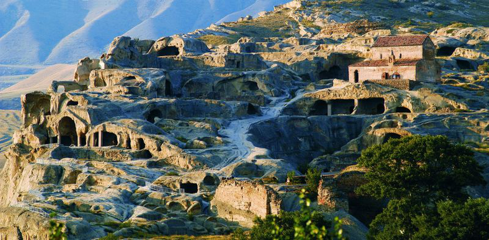
Shida Kartli, Georgia
Information about Shida Kartli:
- Shida Kartli - is the historical-geographic region of Georgia. It is situated in eastern Georgia, in the central part of the historical Kartli region. The old name of Shida Kartli is Zena village. The region is quite rich with important cultural monuments and wonderful nature. Shida Kartli is a region with ancient history. The area was inhabited from the Early Bronze Age. The vast fields, valleys and waterfalls, endowed with thousands of flowers are so much impressive.
- The oldest trace of human life in Shida Kartli was found between the Lamiskana River, the Kavtura and Tedzami rivers, where paleolithic tools were discovered. The area was already quite populated during the Bronze Age (III millennium BC). In the early Bronze Age, the original version of the "Mtkvari-Arax" culture was formed here. The most extensive territorial-administrative unit in Georgia, Khevi was formed in the late Bronze Early Iron age. This is a system of housing hills, one of them promotes and assumes the role of the economic and political center. Several state formations were established in eastern Georgia by the Antic period. When Parnavaz expanded his authority over the whole of Kartli and Egris was joined to the region. Shida Kartli was converted into one administrative unit and the Spaspeti (army chief) became the head of it. The discovery of numerous coins in the Shida Kartli territory is the proof that Iberia had intense trade-economic relationship with the other side of the world. In the first century BC, Rome's commander, Pompeius conquered in Kartli. In the I-III centuries, the kingdom of Iberia was further strengthened. Feudal relations have been established since the 4th century in the ancient Kartli state. This process was contributed by the proclamation of Christianity as a state religion in Kartli in the 1930s. The anonymous Armenian geography of the 7th century, which mainly reflects the situation of the IV-V centuries, presents Kartli again divided into Khevi (ravine) and there are the following names ravines in Shida Kartli (Zena village): Tuniskhevi (Taniskhevi), Dvani, Achabetiskhevi, Gverdisdziri, Sackhumeti, Ksnis Khevi, Ckhradzma, Bazaleti. The whole Shida Kartli was united by Vakhtang Gorgasali as one administrative unit in the fifth century. In the 7th century, Georgia was conquered by the Arabs and the whole burden of Arab domination was on the inner regions of Kartli. By the period of David the Builder Georgia was united as a monarchy. Shida Kartli was leading the economic and cultural life of the country. Cultural life developed in the medieval centuries like secular literature, philosophical thinking, carpentry, monumental painting, stamping, manuscript artwork and stone carving. In the XVII-XVIII centuries the northwestern part of Shida Kartli was called Upper Kartli. From the first quarter of the XVII century, after the Ottoman conquest of Samtskhe-Saatabago, the historical Upper Kartli was separated from the Kartli kingdom and the name removed to the northwestern part of Shida Kartli. Currently, the northern part of historic Shida Kartli is included in the South Ossetian Autonomous District and the Dusheti Municipality. Shida Kartli region includes the municipalities of Gori, Kaspi, Kareli and Khashuri right now.
- Every region is different from each other by its culture and traditions. Kartli region isn’t an exception. This region is rich folklore. Like every site of Georgia, people were singing during their work time in Kartli region. The most popular songs are Kartluri, Namgluri, Harvest song, Kartluri Chona, Makruli. Shida Kartli is rich with cultural monuments, there are legends connected with these sites, such as a legend about Surami Castle. According to legend, they put the only child of a mother in the castle to make the fortress hard to conquer and destroy. It is also said that a woman in black clothes comes to Surami's castle every night, calls his son. There are many public celebrations in Kartli like Atocoba, Didgoroba, Gorijvroba and Kudianoba. On Atocoba, sick people were taken to St. George's church and people begged him for healing. Also they were taking the domestic animals to sacrifice. On Didgoroba celebration you will see riding horses, wrestling and different ceremonies. Also there are some ritual events. Kartli cuisine is diverse with different dishes of fish, meat and vegetarian dishes. Wine making tradition is as much popular here as in whole Georgia. You will meet different types of grapes such as: Shavkapito, Budushuri, Goruli Mtsvane, Gorula and Chinese. Fruits and vegetables are also quite popular in Kartli region, especially apples, peaches, pears, plums.
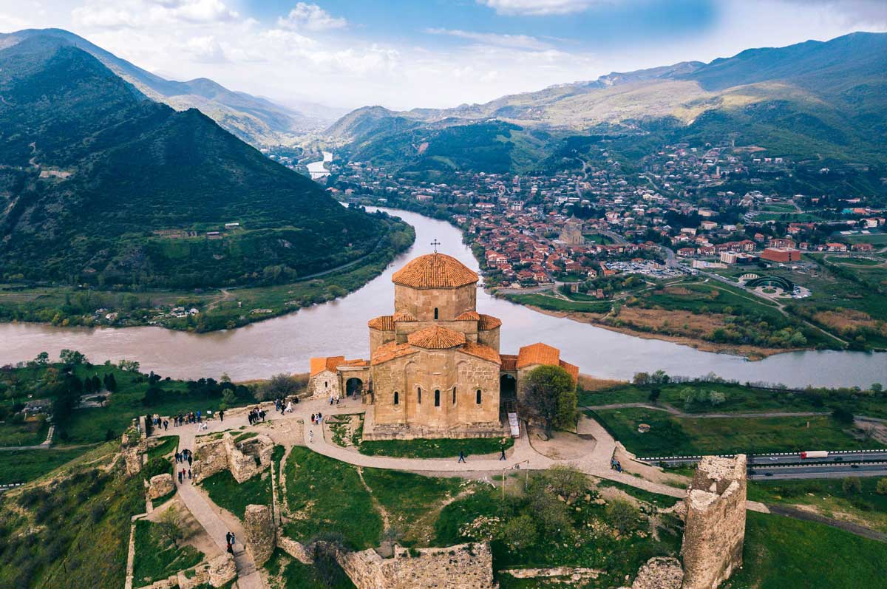
Mtskheta - Mtianeti, Georgia
Information about Mtskheta - Mtianeti:
- Mtskheta - Mtianeti - is located in the eastern Georgia and includes following historical-geographic provinces: Khevi, Ertso-Tianeti, Pshavi, Khevsureti, Mtiuleti, Gudamakari and partly Ksniskhevi. It is bordered by the republics of the Russian Federation to the north: North Ossetia, Ingushetia and Chechnya, to the east - the Kakheti region, to the south - Kvemo Kartli, Shida Kartli to the west. The administrative center of the region is Mtskheta. The following administrative units are included in the region: Akhalgori Municipality, Dusheti Municipality, Tianeti Municipality, Mtskheta Municipality, Kazbegi Municipality. Mtskheta-Mtianeti is a very diverse region with its ancient history, rich with cultural monuments and incredible nature. The territory of Mtskheta was inhabited in the Early Bronze Age. The remains of ancient culture, Khevsurian banyan houses, towers, temples, rugs, beautiful ornamental clothes, peaks, rocks and lakes leave an unforgettable impression on visitors. Saguramo, Pshav-Khevsureti and Kazbegi national nature reserves are located in the region. The Caucasus Ridge with peaks and passes of 3500 m and 5000 m is the main beauty of the region. In the lowlands of Mtskheta-Mtianeti, the climate is moderately humid. There are mildly cold winters and hot, long summers. The average annual temperature is 11, and in January it is below 0. There is a quite humid climate in the mountains, not so characterized for real summers, and above 3300-3400m - the fresh air with its snow and glaciers. There are many religious days and different popular festivals are held during the year in the region, such as Lomisoba, Kopaloba, Lasharoba, Gergetoba and others. Mtskheta-Mtianeti cuisine is distinguished and diverse. The most popular traditional dishes are: Pshavuri Khinkali, Choban Kaurma, Dabalkhacho etc. The region is special with its rich folklore. Dancing, singing, folk poetry, legends, ancient cultural sites, interesting customs and impressive nature make this area unique.
- Khevi is located on the northern slope of the Caucasus mountains, in Tergi valley and also contains the valleys of Truso, Baidari, Snowtskali and Dariali. Khevi is bordered by historical regions: east - Khevsureti, south - Mtiuleti, north - Ossetia, west - Shida Kartli highlands. The main river of the Khevi is Tergi. According to the territorial arrangement of modern Georgia, Khevi is part of the Kazbegi municipality and Stepantsminda is the center of it. Khevi has been inhabited since ancient times. Kazbegi treasures are discovered here, which dates back to the VI-V centuries BC, associated with the religious cult of the ancient tribes of the Caucasus. There are many celebrations here, including Atengenoba, Spatangelozoba, Kazbegoba, Gergetoba, etc. The nature of Khevi is very impressive with its valleys, gorges, alpine lakes and the most important glorious Mount Kazbek. There are many interesting cultural monuments in this area, such as ancient ruins, towers, icons and temples. The Gergeti Trinity church attracts peoples’ attention the most. Besides its cultural significance, it is impressive and stunning with its unique landscapes. Khevi is a real paradise for hikers, climbers and just mountain lovers.
- Ertso-Tianeti includes the upper side of River Ivri (Tianeti district). Ertso-Tianeti was administratively part of the Kingdom of Kakheti. Due to its favorable geographical location, Ertsan-Tianeti had great strategic and economic importance. Also, one of the branches of trade route passed here, which was the connection between the former feudal state of Kartli to Albania (Caucasus) and Armenia. In the 13th century, Mongols invaded Ertso-Tianeti several times. In the 15th century, after the political collapse of the feudal state of united Georgia, Ertso-Tianeti became one of the Samouravo (The part of national feudal domain) of Kakheti kingdom. The economic interests of Pshav-Khevsureti population were mainly related to Ertso-Tianeti, that’s why it is mostly inhabited by mountainous Georgians. With modern administrative-territorial divisions, Ertso-Tianeti is included in Tianeti region of Mtskheta-Mtianeti region. The territory of Tianeti municipality is medium high-mountain. Most of the territory is occupied by highlands and foothills. The main river is the Tianeti River with the Iori River and its numerous tributaries. The Sioni water reservoir is also located here. Several small lakes are also found. The most important is the Grdzelvelebi Lake. This region is rich in cultural monuments: Tshrakara, Bochorma Castle, Jaleti church of St. George etc.